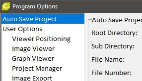

程序选项窗口

您可以通过主菜单
选项 > 程序选项
.
注意：
选项在应用程序关闭之前不会保存到硬盘。
某些选项立即生效，某些需要程序重启。
选项的保存位置根据选项的不同而有所不同：
大多数选项仅为当前用户保存。
某些选项为当前应用程序版本的所有用户保存。
某些选项为所有WITec应用程序和用户系统范围保存。
以下选项可用：
查看器定位选项
图像 查看器 选项
图谱 查看器 选项
项目管理器选项
图像 导出 选项
用户界面选项
OpenGL 选项
图谱 ASCII to External 程序选项
Memory 选项
Auto Save 项目 选项